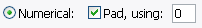
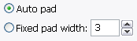
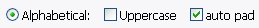
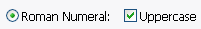
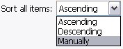
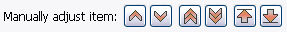
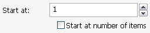
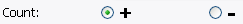
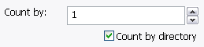
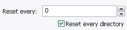

Toto je defaultný štýl číselnej sekvencie, s použitím obyčajných čísiel.
Defaultne je zaškrtnuté Zarovnať, pre správne triedenie názvov súborov.
Pre zarovnanie sa dá použiť akýkoľvek validný znak.

Tu sa nastavujú ďaľšie zarovnávacie voľby pre numerické číslovanie.
Defaultne, Automaticky zarovnavať je použité, aby všetky zarovnania
mali rovnakú dľžku, bez ohľadu na počet premenovávaných položiek.
Ale zadať sa dá aj Pevná dĺžka zarovnania.

Použite túto voľbu pre abecedné číslovanie. Defaultne,
je zvolené automaticky zarovnať, takže má číslovanie
rovnakú dĺžku pre správne triedenie.
Dajú sa používať malé a veľké písmená.

Zapnite túto voľbu, ak chcete číslovať rímskymi číslicami.
Všetky čísla musia byť v intervale 1 až 4999, kvôli obmedzeniam
tohoto systému. Pri číslach mimo rozsah nastane chyba.
Rímske číslice s malými písmenami odškrtnite Veľké písmená.

Toto upravuje poradie, v ktorom sú položky číslované.
Stúpajúc čísluje položky bežným spôsobom: 1,2,3,4,
Klesajúc čísluje opačne: 4,3,2,1, a
Ručne čísluje v poradí, v akom sú vybrané
v záložke Zberač, a umožňuje poradie ďalej meniť.
Ak použijete tlačítko všetko pre výber položiek s voľbou Ručne,
tak budu položky zotriedené vzostupne.

Ak Zotriediť všetky položky je nastavené na Ručne,
potom môžte kliknutím vybrať položku z náhľadu, a posunúť ju pomocou
tlačítok.
Z ľava do prava: presunúť hore o 1, presunúť dole o 1, presunúť hore o 5,
presunúť dole o 5, presunúť na vrch zoznamu, posunúť na spodok.

Toto je počiatočná hodnota číslovania. Číslo bude zmenené na svoj abecedný
alebo Rímsky ekvivalent, ak je jedno z toho zvolené.
Ak je zvolené Začínať na počte položiek, tak je počiatočná
hodnota spočítaná automaticky z celkového počtu položiek určených
na premenovanie.

Určuje, ktorým smerom číselnú postupnosť počítať.
Záporné čísla spôsobia chybu v prípade, že je vybrané
abecedné alebo Rímske číslovanie.

Hodnota, o ktorú sa zvyšuje čítač. Ak je zvolené Počítať po adresároch,
tak sa čítač zvyšuje iba pri zmene adresára,
ktorého položky sú vybrané na premenovanie.

Tu sa zadáva, či sa má čítač resetovať každých niekoľko položiek.
'0' znamená 'neresetovať'.
Môže byť použit0 v spojení s Resetovať každý adresár.
Ak je v Zberači zaškrtnuté 'Priechod', tak Resetovať každý adresár
resetuje čítač pri každej zmene adresára.
Toto je vhodné pri prečíslovaní niekoľkých mp3 albumov naraz.